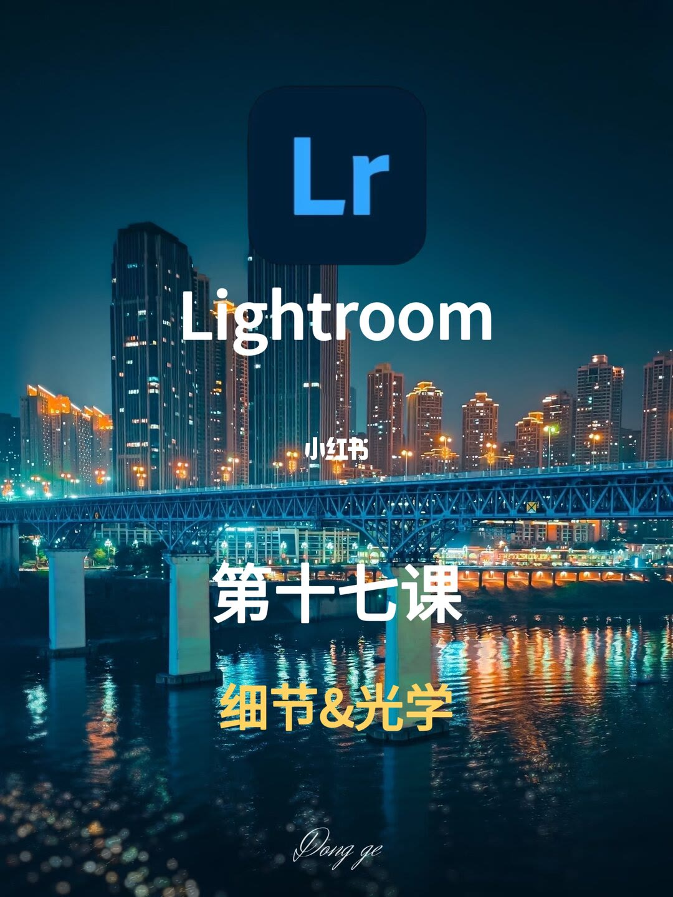
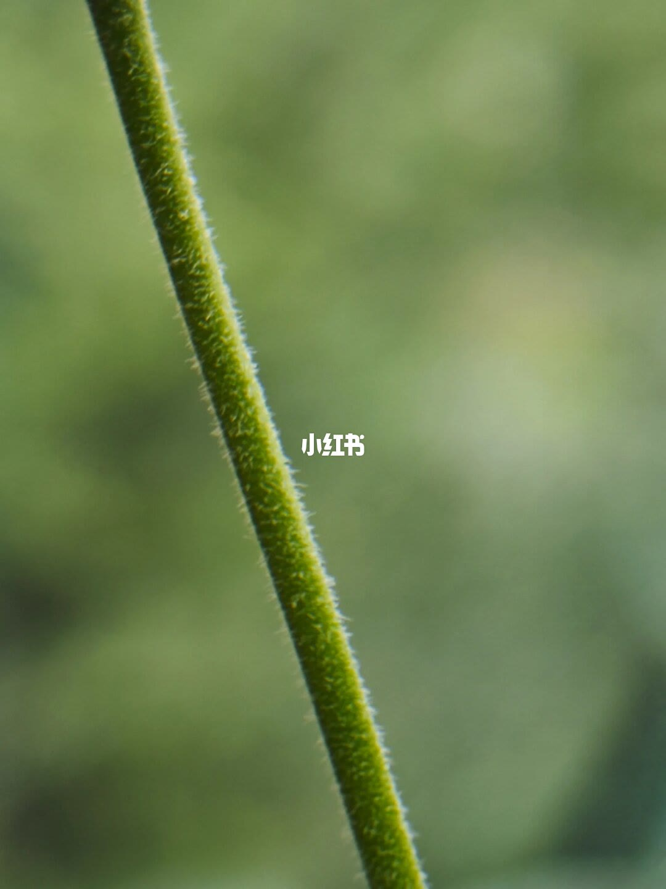
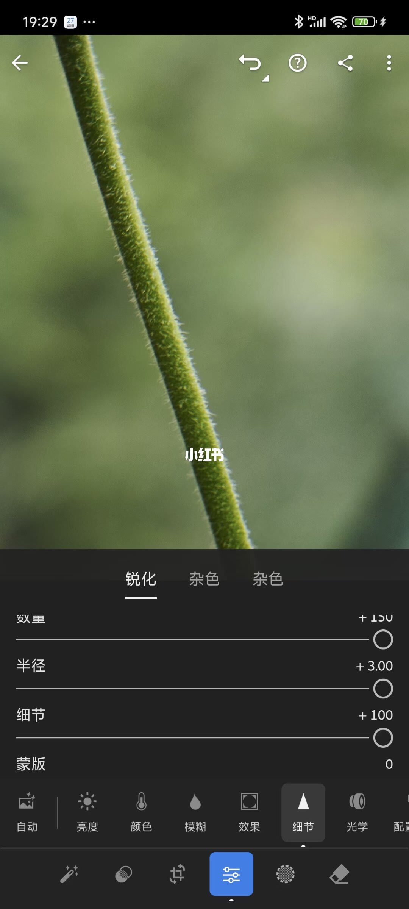
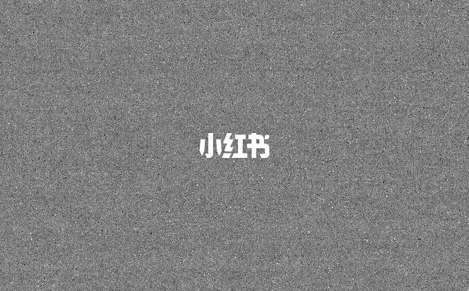
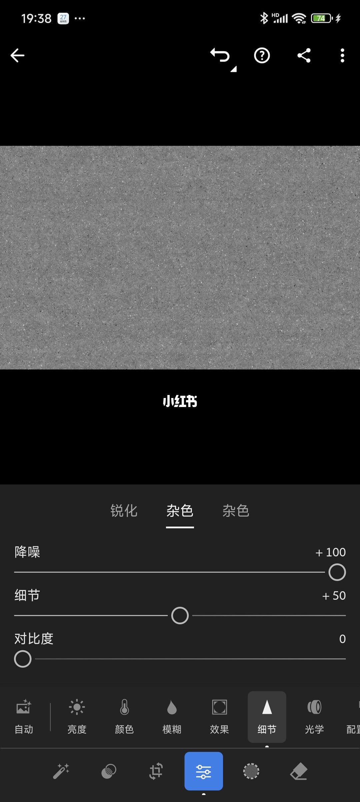
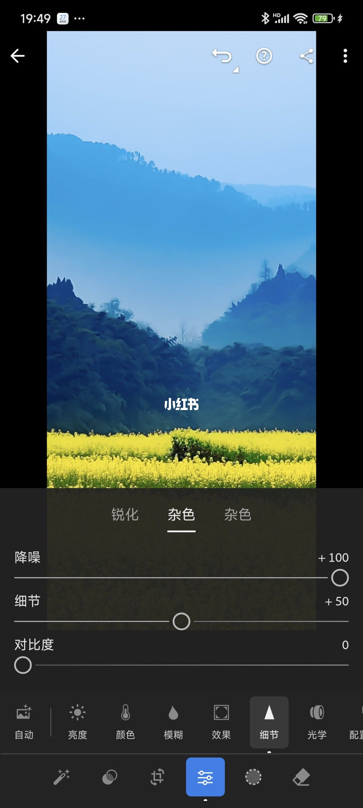
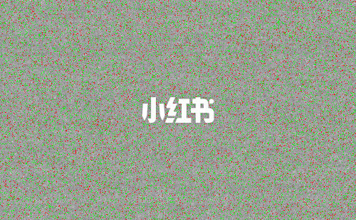
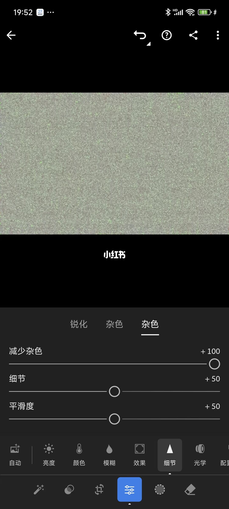

内容要点
[种草R]家人们，我是东哥。今天给大家讲解 Lightroom 里细节调整工具！ 🎈前期准备 [种草R]打开 Lightroom 软件，在“编辑”里就可以找到“细节”工具了。点开“细节”可以看到有“锐化”和两个“杂色”，实际上第一个“杂色”是“降噪”工具、第二个“杂色”是“减少杂色” 🔍锐化工具 [种草R]锐化工具和清晰度原理相似，都是为了提升画面清晰度，主要是通过增强图像边缘的对比度来提高画面的清晰度和细节表现。它有半径、细节、蒙版三个工具。半径和细节越往右拉，细节越清楚，蒙板恰好相反，往右拉可以让锐化变得更平滑，但改变程度很弱，主要用于微调。 [种草R]操作演示：将图2锐化数量、半径、细节都拉到最大，枝干上的细节越清晰了（图3）。实际上我们在使用中很少对半径、细节、蒙板作调整，通常保持默认状态。 🌟降噪工具 [种草R]噪点，简单来说就是图像中亮度或颜色信息的随机变化，类似画面中的颗粒。当照片颗粒量严重时，就可以用降噪工具来去除。它下边还有“细节”和“对比度”工具。 [种草R]操作演示： 面对黑白颗粒噪点的图片（图4），向右拖动降噪工具，画面颗粒会减少（图5）。如
知识结构
[种草R]家人们，我是东哥。今天给大家讲解 Lightroom 里细节调整工具！
[种草R]家人们，我是东哥。今天给大家讲解 Lightroom 里细节调整工具！
[种草R]家人们，我是东哥。今天给大家讲解 Lightroom 里细节调整工具！
- [种草R]家人们，我是东哥。今天给大家讲解 Lightroom 里细节调整工具！ 🎈前期准备 [种草R]打开 Lightroom 软件，在“编辑”里就可以找到“细节”工具了。点开“细节”可以看到有“锐化”和两个“杂色”，实际上第一个“杂色”是“降噪”工具、第二个“杂色”是“减少杂色” 🔍锐化工具 [种草R]锐化工具和清晰度原理相似，都是为了提升画面清晰度，主要是通过增强图像边缘的对比度来提高画面的清晰度和细节表现。它有半径、细节、蒙版三个工具。半径和细节越往右拉，细节越清楚，蒙板恰好相反，往右拉可以让锐化变得更平滑，但改变程度很弱，主要用于微调。 [种草R]操作演示：将图2锐化数量、半径、细节都拉到最大，枝干上的细节越清晰了（图3）。实际上我们在使用中很少对半径、细节、蒙板作调整，通常保持默认状态。 🌟降噪工具 [种草R]噪点，简单来说就是图像中亮度或颜色信息的随机变化，类似画面中的颗粒。当照片颗粒量严重时，就可以用降噪工具来去除。它下边还有“细节”和“对比度”工具。 [种草R]操作演示： 面对黑白颗粒噪点的图片（图4），向右拖动降噪工具，画面颗粒会减少（图5）。如
[种草R]家人们，我是东哥。今天给大家讲解 Lightroom 里细节调整工具！ 🎈前期准备 [种草R]打开 Lightroom 软件，在“编辑”里就可以找
1/9–4/9封面/要点：[种草R]家人们，我是东哥。今天给大
[种草R]家人们，我是东哥。今天给大家讲解 Lightroom 里细节调整工具！ 🎈前期准备 [种草R]打开 Lightroom 软件，在“编辑”里就可以找到“细节”工具了。点开“细节”可以看到有“锐化”和两个“杂色”，实际上第一个“杂色”是“降噪”工具、第二个“杂色”是“减少杂色” 🔍锐化工具 [种草R]锐化工具和清晰度原理相似，都是为了提升画面清晰度，主要是通过增强图像边缘的对比度来提高画面的清晰度和细节表现。它有半径、细节、蒙版三个工具。半径和细节越往右拉，细节越清楚，蒙板恰好相反，往右拉可以让锐化变得更平滑，但改变程度很弱，主要用于微调。 [种草R]操作演示：将图2锐化数量、半径、细节都拉到最大，枝干上的细节越清晰了（图3）。实际上我们在使用中很少对半径、细节、蒙板作调整，通常保持默认状态。 🌟降噪工具 [种草R]噪点，简单来说就是图像中亮度或颜色信息的随机变化，类似画面中的颗粒。当照片颗粒量严重时，就可以用降噪工具来去除。它下边还有“细节”和“对比度”工具。 [种草R]操作演示： 面对黑白颗粒噪点的图片（图4），向右拖动降噪工具，画面颗粒会减少（图5）。如




5/9–8/9第5/9页：LR 细节调整工具，90%的人没搞懂
[种草R]家人们，我是东哥。今天给大家讲解 Lightroom 里细节调整工具！ 🎈前期准备 [种草R]打开 Lightroom 软件，在“编辑”里就可以找到“细节”工具了。点开“细节”可以看到有“锐化”和两个“杂色”，实际上第一个“杂色”是“降噪”工具、第二个“杂色”是“减少杂色” 🔍锐化工具 [种草R]锐化工具和清晰度原理相似，都是为了提升画面清晰度，主要是通过增强图像边缘的对比度来提高画面的清晰度和细节表现。它有半径、细节、蒙版三个工具。半径和细节越往右拉，细节越清楚，蒙板恰好相反，往右拉可以让锐化变得更平滑，但改变程度很弱，主要用于微调。 [种草R]操作演示：将图2锐化数量、半径、细节都拉到最大，枝干上的细节越清晰了（图3）。实际上我们在使用中很少对半径、细节、蒙板作调整，通常保持默认状态。 🌟降噪工具 [种草R]噪点，简单来说就是图像中亮度或颜色信息的随机变化，类似画面中的颗粒。当照片颗粒量严重时，就可以用降噪工具来去除。它下边还有“细节”和“对比度”工具。 [种草R]操作演示： 面对黑白颗粒噪点的图片（图4），向右拖动降噪工具，画面颗粒会减少（图5）。如



9/9–9/9第9/9页：LR 细节调整工具，90%的人没搞懂
[种草R]家人们，我是东哥。今天给大家讲解 Lightroom 里细节调整工具！ 🎈前期准备 [种草R]打开 Lightroom 软件，在“编辑”里就可以找到“细节”工具了。点开“细节”可以看到有“锐化”和两个“杂色”，实际上第一个“杂色”是“降噪”工具、第二个“杂色”是“减少杂色” 🔍锐化工具 [种草R]锐化工具和清晰度原理相似，都是为了提升画面清晰度，主要是通过增强图像边缘的对比度来提高画面的清晰度和细节表现。它有半径、细节、蒙版三个工具。半径和细节越往右拉，细节越清楚，蒙板恰好相反，往右拉可以让锐化变得更平滑，但改变程度很弱，主要用于微调。 [种草R]操作演示：将图2锐化数量、半径、细节都拉到最大，枝干上的细节越清晰了（图3）。实际上我们在使用中很少对半径、细节、蒙板作调整，通常保持默认状态。 🌟降噪工具 [种草R]噪点，简单来说就是图像中亮度或颜色信息的随机变化，类似画面中的颗粒。当照片颗粒量严重时，就可以用降噪工具来去除。它下边还有“细节”和“对比度”工具。 [种草R]操作演示： 面对黑白颗粒噪点的图片（图4），向右拖动降噪工具，画面颗粒会减少（图5）。如

口述/画面要点（9段）
结合 Whisper medium 与画面大字整理；专有名词已校对。
封面/要点：[种草R]家人们，我是东哥。今天给大家讲解 Lightroom 里细节调整工具！
第2/9页：LR 细节调整工具，90%的人没搞懂它✨
第3/9页：LR 细节调整工具，90%的人没搞懂它✨
第4/9页：LR 细节调整工具，90%的人没搞懂它✨
第5/9页：LR 细节调整工具，90%的人没搞懂它✨
第6/9页：LR 细节调整工具，90%的人没搞懂它✨
第7/9页：LR 细节调整工具，90%的人没搞懂它✨
第8/9页：LR 细节调整工具，90%的人没搞懂它✨
第9/9页：LR 细节调整工具，90%的人没搞懂它✨